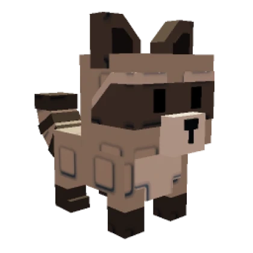

Top 10 Pets in Grow a Garden Roblox — Detailed Guide
-
1. Golden Fox
The Golden Fox is one of the rarest and most prized pets in Grow a Garden. With its luxurious golden fur that shines brightly in the sun, this pet symbolizes wealth and elegance. It is often a status symbol for players who have invested time and effort into the game. Beyond its striking appearance, the Golden Fox has great stats that help in garden growth and protection. Many players hunt for it during special events or through trading with others.
-
2. Rainbow Bunny
The Rainbow Bunny is adored by players for its vibrant, multicolored fur that glows softly in the dark. This pet not only adds a splash of color to your garden but also emits a warm, friendly vibe. Its rarity makes it a valuable addition to any collection. The Rainbow Bunny’s cheerful design inspires creativity and positivity among players, making it a popular pet choice for those who want their garden to stand out.
-
3. Mystic Owl
hat look like they came straight out of a fantasy story. This pet is loved for its mystical aura and unique animations. Many players believe the Mystic Owl brings wisdom and protection to their gardens, making it a symbolic guardian. It often appears in limited-time events, which adds to its allure and rarity. -
4. Frost Wolf
The Frost Wolf has an icy blue coat with snowflake patterns, perfectly fitting for players who love winter-themed pets. Its cold, calm demeanor adds a cool atmosphere to any garden. Not only is it visually stunning, but it also has enhanced abilities to help your plants grow faster during snowy or cold seasons in the game. The Frost Wolf is considered a symbol of resilience and strength.
-
5. Crystal Cat
With fur that sparkles like diamonds and eyes that glisten like jewels, the Crystal Cat is a dazzling companion. This pet is popular among players who appreciate beauty and elegance combined with a bit of mystery. The Crystal Cat often helps players unlock special bonuses in their garden, rewarding those who take good care of their pets. Its graceful movements and shimmering fur make it a fan favorite.
-
6. Sunflower Chick
The Sunflower Chick is a small, adorable pet with bright yellow feathers and sunflower motifs. It represents growth, happiness, and energy, perfectly matching the theme of growing a garden. This cheerful pet boosts the morale of players and adds a sunny vibe to their gardens. It’s relatively easier to obtain compared to others, making it a great starter pet for beginners who want a positive companion.
-
7. Midnight Panther
Sleek, black, and mysterious, the Midnight Panther is the pet for players who like a bit of edge and style. It moves silently and has glowing purple eyes, giving it a shadowy presence. This pet is known for its agility and speed, helping players complete garden tasks faster. Because of its rarity, the Midnight Panther is often a prized possession that players show off with pride.
-
8. Glowfish
The Glowfish is a unique aquatic pet that lights up the garden pond with its bioluminescent body. It has a calming effect and helps create a serene environment. Players who love nature and aquatic life often choose the Glowfish for its soothing glow and peaceful aura. This pet’s presence can enhance the overall ambiance of your garden, making it feel magical and alive.
-
9. Petal Pony
The Petal Pony is a small, magical horse covered in soft, colorful flower petals. It’s whimsical and enchanting, perfect for players who enjoy fairy-tale aesthetics. The Petal Pony often provides boosts to flower growth and garden decoration bonuses. Its gentle nature and floral design make it a beloved pet among those who want their gardens to feel vibrant and full of life.
-
10. Electric Squirrel
Last but not least, the Electric Squirrel is a lively and rare pet crackling with electric energy. It’s fast, energetic, and adds an exciting dynamic to your garden. This pet is known for its ability to speed up certain garden tasks and can even light up dark areas. The Electric Squirrel is a symbol of energy and innovation, perfect for players who like a fast-paced gardening experience.